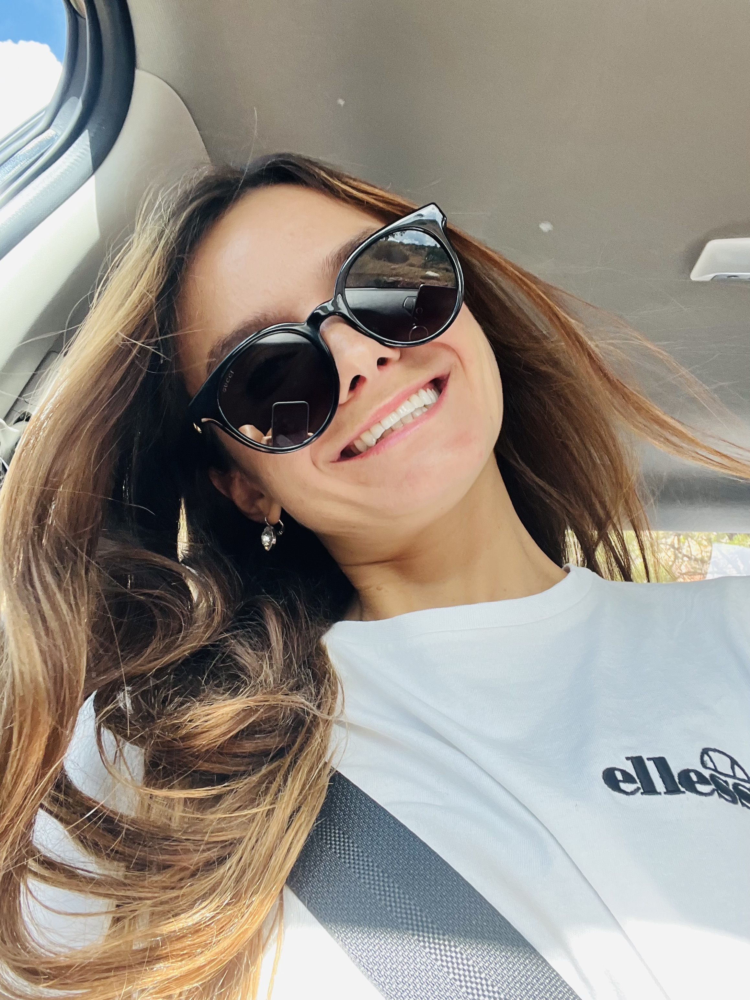
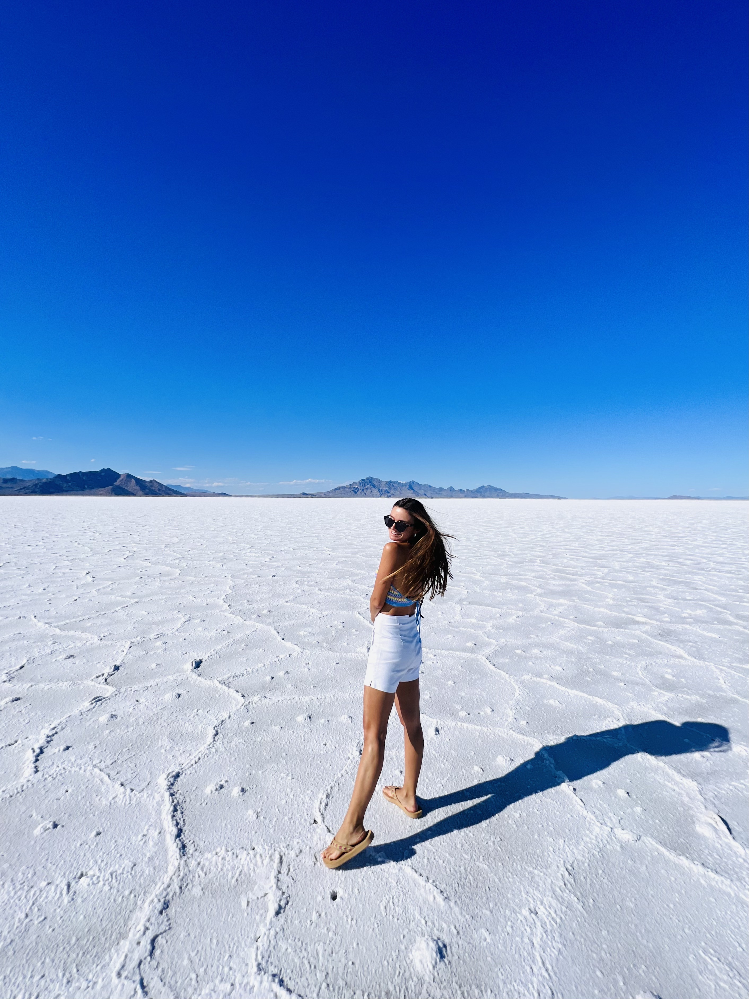
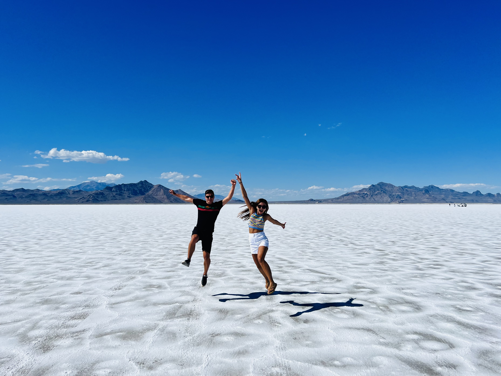
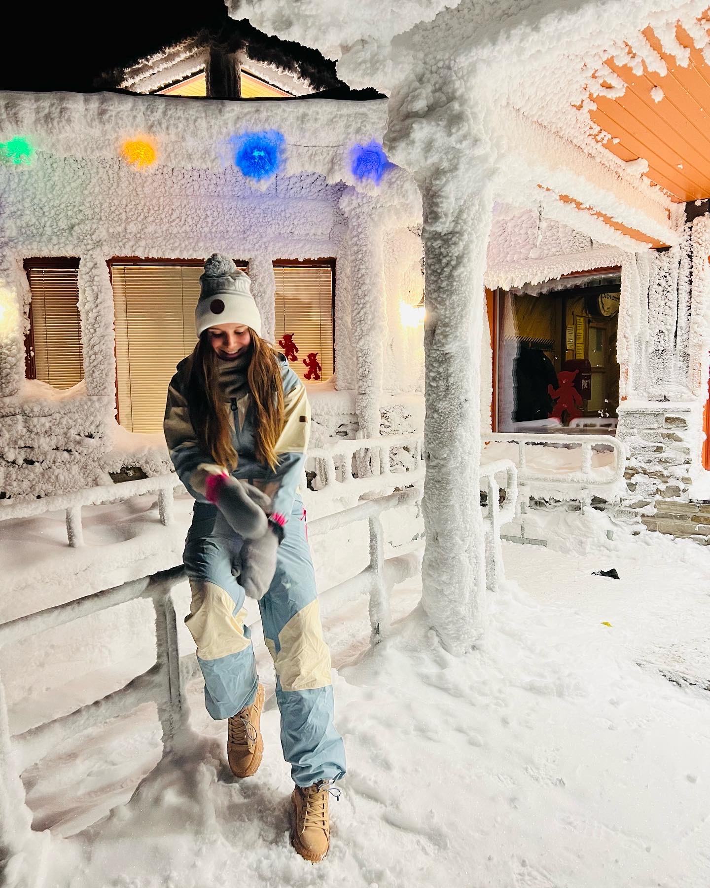
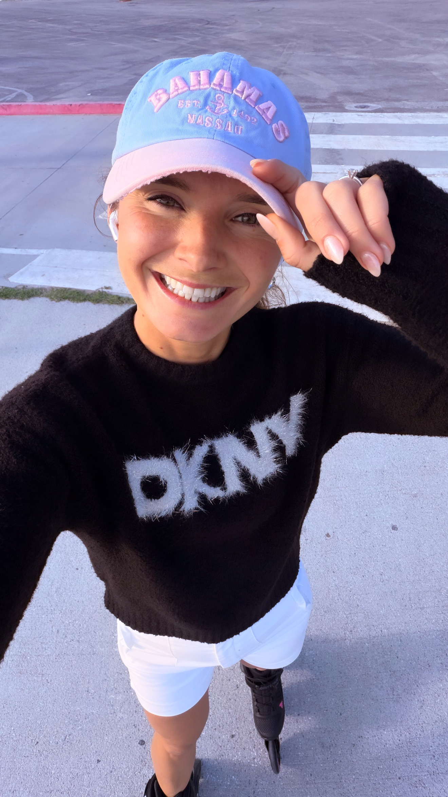
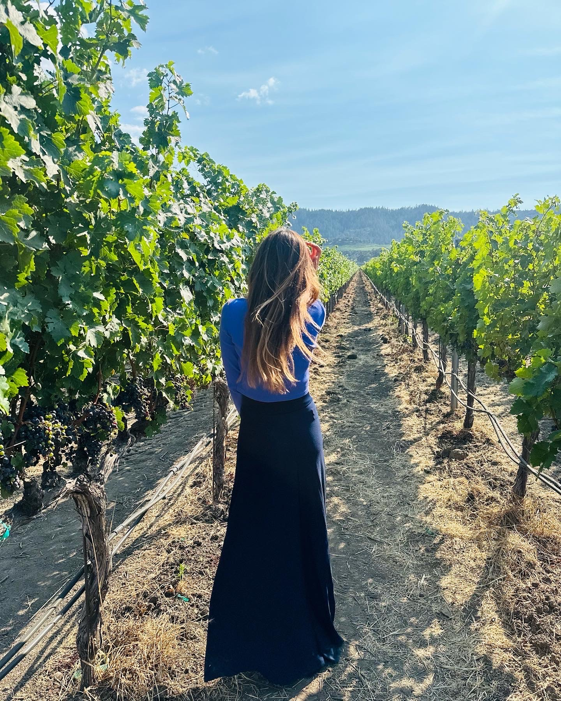
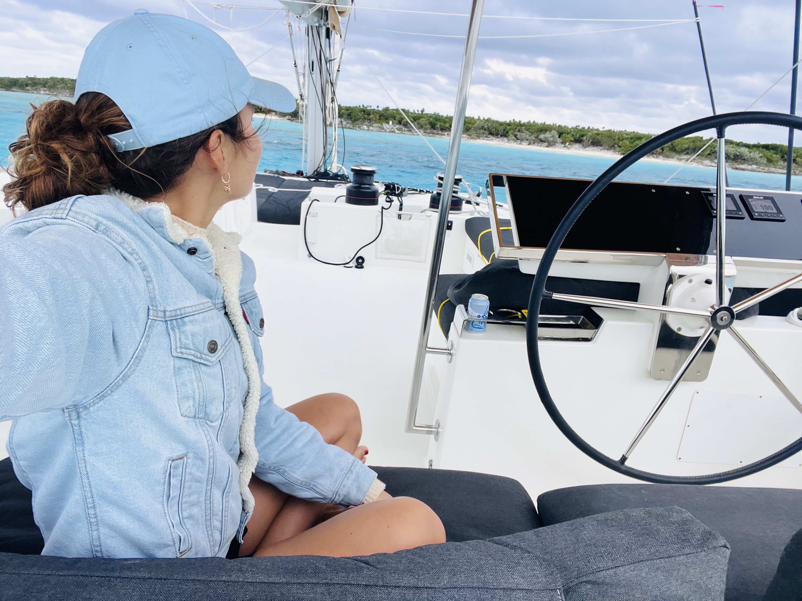
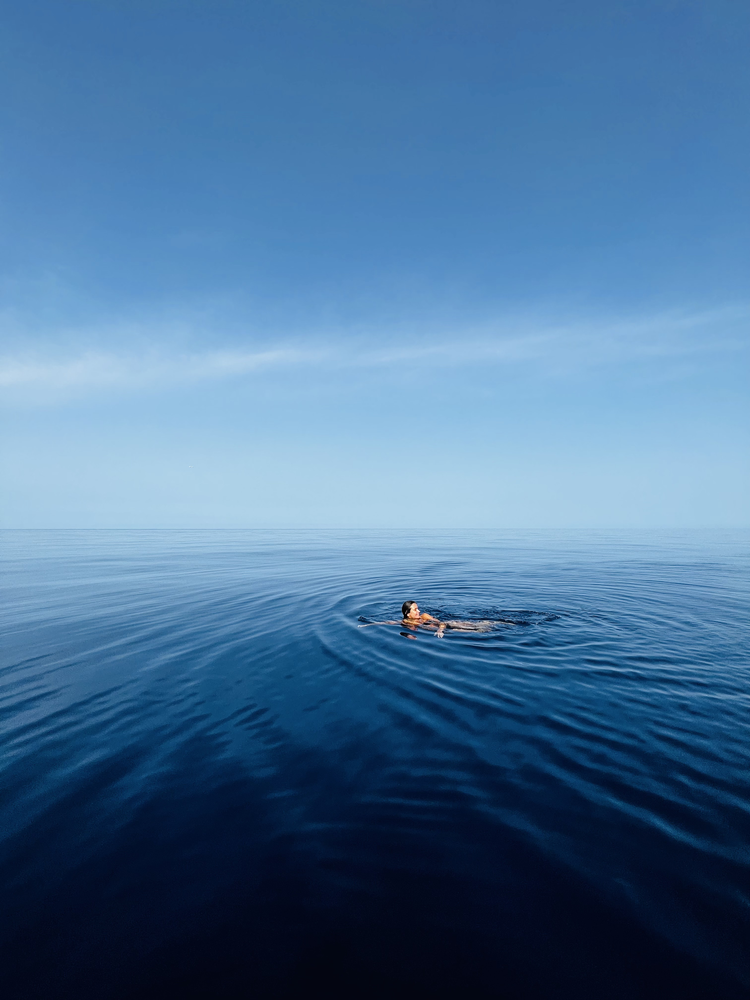
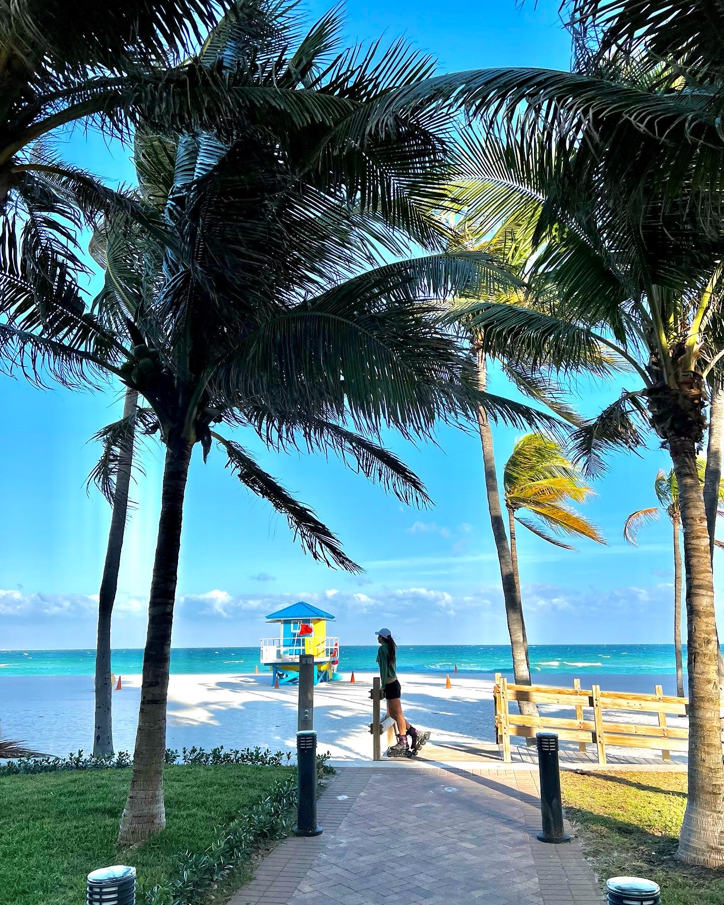
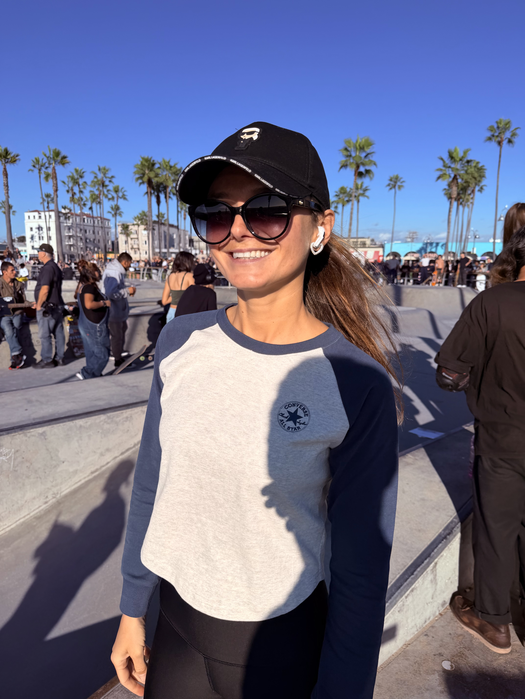

Tashi Tash
Sets · Movement · Journal
Music, skating, travel, and selected moments in between.

On her way.
En route
01
Listen
Featured track
Delicate — Echolocation & Jordan Whitlock
Full track with Spotify login, preview without
02
Reel
RL 01
RL 02
RL 03
03
Blue Series
One roll · One moodBS 01Blue

Tashi.
BS 02Blue
Hand in hand.
BS 03Blue

Martin & Tashi.
04
Journal
Contact sheetFR 01Zion

Cycling out of Zion NP.
FR 02Finland

Freezing, worth it.
FR 03Malibu

Malibu, waiting on the light.
FR 04Napa Valley

Napa Valley, quick stop.
FR 05Bahamas

Under sail, Bahamas.
FR 06Greece

Greece, deep blue.
FR 07Miami

Miami light.
FR 08Malibu

Back in Malibu.
FR 09Santa Monica

Santa Monica.
FR 10Venice

Venice skatepark.
05
About
Alias · Tashi TashThis site is a home for sets, movement, travel, and selected visual notes.
Music, skating, coastal light, transit moments, and small fragments from the road.
Alias
Tashi Tash
Focus
Sets, movement, visual notes
SoundCloud
Instagram